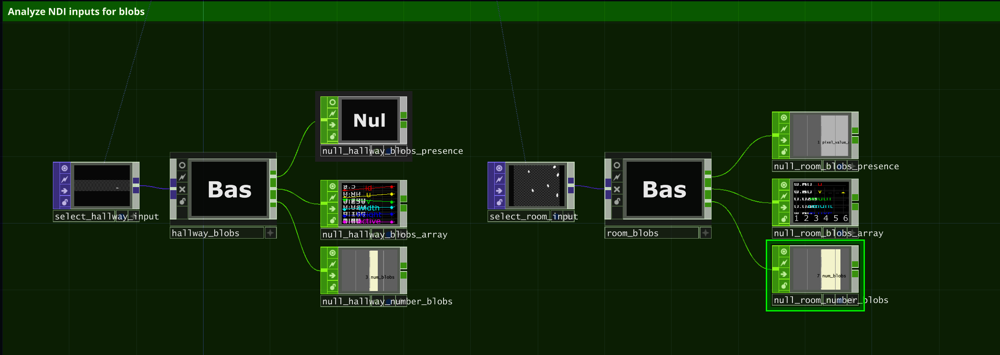

Selected Work
The Light Floor is WNDR Museum's staple attraction at all of its locations. It encapsulates the WNDR experience: multi-sensory works of art that awaken and evolve with human interaction. Visitors dance, explore, and reflect upon the infinity created by mirrors on the walls and floor.
For each floor, at different locations, a custom TouchDesigner application was developed to create a unique visual experience. Sensor data from Brightlogic's custom interactive panels was streamed via NDI into TouchDesigner, where a blob-detection algorithm extracted touchpoint positions.
These blobs not only drove interaction logic but also generated a stylized visualization that elevated the low-resolution input into a more refined form — colorful particle systems, ice crack simulations, and real-time fluid effects.
